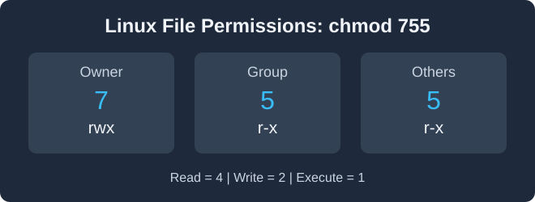

Understanding Octal (Base 8)
Octal is a base-8 number system that uses eight digits, from 0 to 7. It provides a compact way to represent binary numbers and is particularly useful when working with file permissions in Linux.
How Does Octal Work?
Octal is a positional number system with a base of 8. It uses eight different digits, from 0 to 7.
Each position represents a power of 8, starting from the right with 8^0.
Octal Digits
- 0, 1, 2, 3, 4, 5, 6, 7
Unlike decimal, octal does not use the digits 8 or 9. After 7, the next number is written as 10 in octal.
Converting Octal to Decimal
Each position in an octal number represents a power of 8, starting from the right with 8^0.
Example: Convert 31 to Decimal
- Identify the digits: 3 and 1.
- Multiply 3 by 8^1 = 24.
- Multiply 1 by 8^0 = 1.
- Add the results: 24 + 1 = 25.
Therefore, octal 31 equals decimal 25.
Octal and Binary
Each octal digit represents exactly three binary bits. This makes octal a compact way to represent binary values.
Example: 75 in Binary
- 7 = 111 in binary.
- 5 = 101 in binary.
- 75 in octal = 111101 in binary.
- 75 in octal = 61 in decimal.
Octal notation is especially useful in Unix and Linux file permissions.
Octal in Linux File Permissions
Linux uses octal notation to represent file permissions for three categories: owner, group, and others.
Permission Values
- Read (r) = 4
- Write (w) = 2
- Execute (x) = 1
Example: chmod 755
The command chmod 755 filename sets the following permissions:
- Owner (7): Read, Write, Execute (4+2+1)
- Group (5): Read, Execute (4+1)
- Others (5): Read, Execute (4+1)
This permission setting is commonly used for executable files and directories.
Common Linux Permission Values
| Octal | Binary | Permissions |
|---|---|---|
| 7 | 111 | rwx (Read, Write, Execute) |
| 6 | 110 | rw- (Read, Write) |
| 5 | 101 | r-x (Read, Execute) |
| 4 | 100 | r-- (Read) |
| 0 | 000 | --- (No permissions) |
